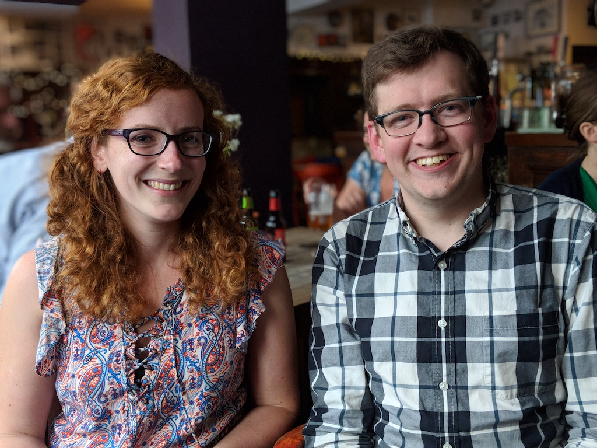

Welcome Wagon¶
Hello!
We’re Beth and Daniel, your Welcome Wagon! We’re glad you’re coming to the 2018 Write the Docs conference!

We’ve gathered important stuff here that will help you navigate the conference like a pro, make you feel more at home, and help you to manage the constant flow of information.
The Welcome Wagon events warm up new attendees and connect them with people, both veterans and other first-timers. Strategies and pro tips provide ways you can make the most of the conference.
The FAQs should have answers to most of your questions, but let us know if there is anything you’d like to know that isn’t there. You can ask us questions in the #wtd-conferences channel on Slack or you can send Daniel or Beth an email.
Welcome Wagon events¶
Write the Docs Welcome Wagon Introduction
Sunday, September September 9 at 17:00 in the downstairs foyer (near the cloakroom) at Auto-Klub
Join us for an informal Introduction to Write the Docs, to the Welcome Wagon, and to other first-time conference attendees. We’ll pass on some information about the conference specifically for first-timers and give everyone a chance to meet someone new before we join the opening reception.
Welcome Wagon Tours
Sunday, September September 9 at 17:30 starting near the registration desk at Auto-Klub
Monday, September September 10-11 at 9:15 starting near the registration desk at Auto-Klub
Come on a short tour of the venue with a veteran Write the Docs attendee so you’ll know where everything is and everything you can take part in.
Welcome Wagon Check-In
Tuesday, September September 11 at 9:15 near the registration desk at Auto-Klub
Meet back up with the Welcome Wagon and fellow first-timers to check-in about how the conference is going for you. Ask any questions you have, pass on stories from your first day, and let the Welcome Wagon know if there is anything you need to make your second day as successful as your first one.
Pro Tips¶
You don’t need to go to every talk. Look through the schedule of events before you arrive or while you are eating or taking a break. Figure out which talks you want to see the most. Spread out your time between talks, unconference sessions, networking, and breaks.
Speaking of breaks–conferences are exhilarating, but can also be exhausting. Give your brain a break! Grab a spot in the quiet room or take a quick walk. Play a board game on your lunch break. Come back invigorated.
Starting Monday morning, check the unconference schedule in the unconference room to see if there are any sessions you are interested in attending. New sessions are added all the time, so check back periodically.
Eat! You can use the energy.
Are you looking for a job or is there an opening at your company? Check out the job board in the unconference room.
FAQ¶
Where is everything?¶
The conference main stage is in the Auto Klub on the second floor. The unconference takes place directly across the foyer in the adjoining room.
If you are joining in the boat tour on Saturday, you’ll meet the other folks at the Prague Boats pier no. 5.
How should I get around?¶
Prague is a very walk-able town. Most of the events are within walking distance of the conference venue.
There are good public transportation options and taxi services. Check out the Visiting Prague section of the Write the Docs website for more info.
How should I dress?¶
Praguers have a very eclectic dress style, which means they dress however they feel! Our documentarians tend to go for a more casual dress at the conference. You’ll be meeting business colleagues at this conference, though, so neat and comfortable are good dress guidelines.
If you are going on the Write the Docs boat tour on Saturday, be sure to bring appropriate out-of-doors clothes and shoes. Prague, like most of Europe, experiences some ups and downs in the autumn. The first year we were here we had a heat wave, and last year we got rained on, so you never know! Layering is usually the way to go.
What will I eat?¶
Drinks and food are provided for you on conference days, so you can focus on the talks and meeting people and don’t have to worry about where to get your morning coffee.
Coffee, tea, and water are always available in the Auto Klub. Bring a water bottle to make it easier for you to stay hydrated.
Food is provided on Sunday, Monday, and Tuesday in the Auto Klub. There is a light breakfast, a solid lunch, and snacks on each conference day.
On Saturday and in the evenings on Monday and Tuesday, explore the food options in Prague. Invite someone you just met to join you! If you are invited to dinner, say yes! Making connections over dinner is a great way to get to know more people.
If you need grocery items, there is a BILA supermarket at the Prague train station across the park from Auto Klub.
Where should I sit?¶
The Auto Klub will have round tables next to the main stage and rows of seats behind them. There will also be seats in the mezzanine level.
There are no reserved seats; feel free to sit anywhere.
If you can, show up early to the conference each morning to grab a seat at one of the round tables. Introducing yourself to your neighbors is one of the easiest way to meet people.
What should I do during the talks?¶
The time between talks is for meeting your colleagues or taking a break. During the talks, listen and take in as much as you can.
There is a lot of great information at this conference, but don’t worry if you miss something! All talks are videotaped, so you can review them later.
If you have a question during a talk, make a note of it and use it as a conversation starter with the speaker after the talk.
After a talk, feel free to tweet about it with the hashtag #writethedocs. Try not to “watch” the conference through Twitter and other social media, though. You are attending the conference, so live in it as much as you can!
Unconference
Check the schedule posted in the unconference room for the table number of the unconference talk you are interested in. Head to that table and have a seat.
The session leader will begin when the group has gathered.
Feel free to just listen or add your voice to the discussion. Unconference talks are designed to get everyone involved.
How do I take part in the unconference?¶
The unconference is a set of informal sessions that take place across the foyer from the main stage on Monday afternoon and Tuesday morning. Unconference talks focus on exchanges of ideas between participants.
You can attend unconference sessions, or, if you have an idea for a session, you can lead one.
To lead an unconference session, post a summary of your topic on a post-it note in an empty spot on the unconference schedule. Make your way to the unconference room a few minutes early to introduce yourself to anyone who is attending your session. Once the group has gathered, introduce your topic and get the discussion going.
What are lightning talks, and should I give one?¶
A lightning talk is a five-minute talk where you quickly share a concept or bit of info you find interesting.
Lightning talks are a great way to practice public speaking, get people excited about your unconference session, and test interest in a conference proposal idea.
Do you have an idea, want to talk about a new tool you are learning, or review a process? Then, yes! Sign up for a lightning talk. There will be a sign-up sheet at registration.
If you are interested in giving a lightning talk, be prepared! There is a great guide here.
How do I make the most out of this conference?¶
Attend the Welcome Wagon events. Make connections with other first-time attendees and get advice from seasoned pros.
The most important part of this conference (and any conference) is the people you meet. Set a goal for yourself to meet a few new people. Here are some tips:
Find out who is attending the conference before you get there. Join the Write the Docs Slack, follow the Write the Docs on Twitter, and review the list of speakers.
Figure out which companies will be represented at the conference. If you see a job post you’re interested in, you might want to ask them a few questions. This might be a great time to better understand what it’s like to work at certain companies.
Make a list of a few people you would like to meet, and write down some questions for them. If you can find contact information, email them before the conference and let them know you are looking forward to chatting.
Most importantly, remember that you don’t have to meet everyone. In fact, you shouldn’t. You should plan to make a few, meaningful connections. That is what the Write the Docs conference is about, so go for it! Introduce yourself.
Sample strategy for my first Write the Docs conference¶
Join the Write the Docs Slack, and participate in the Welcome Wagon chat room to start making conference connections.
Make a list of two people who are attending with some notes about them and questions for them. Either reach out by email before the conference to set up a meeting onsite or find them at the conference.
Attend the Welcome Wagon events.
Join in the Saturday boat tour.
Attend the Sunday writing day and volunteer to help on one of the projects being worked on.
Check out the talk schedule in advance and make note of the talks you don’t want to miss.
In the morning, or when you need a break during the day, head over to the unconference room to check out the unconference schedule. Make note of any unconference talks you want to attend.
Check out the lightning talks, and get excited about presenting one at next year’s conference.
Sample strategy for a second or higher Write the Docs conference¶
Attend the Welcome Wagon events and share your conference knowledge. You might learn something new yourself!
Reach out to some first-time attendees and tell them about your first conference.
Attend the Sunday writing day with your own project. Ask for help!
Check out the talk schedule in advance and make note of the talks you don’t want to miss.
In the morning, or when you need a break during the day, head over to the unconference room to check out the unconference schedule. Make note of any unconference talks you want to attend.
Sign up for a lightning talk or lead an unconference session.
Thanks¶
This document was inspired by other conferences doing great work in this area. In particular, these two documents were heavily used as a reference: